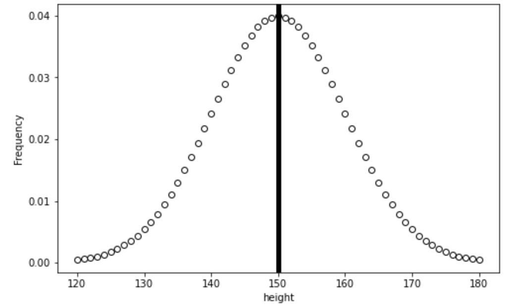
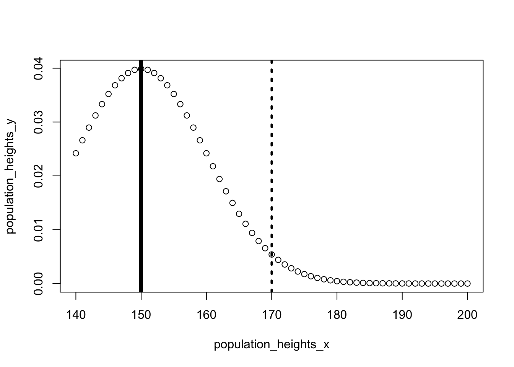
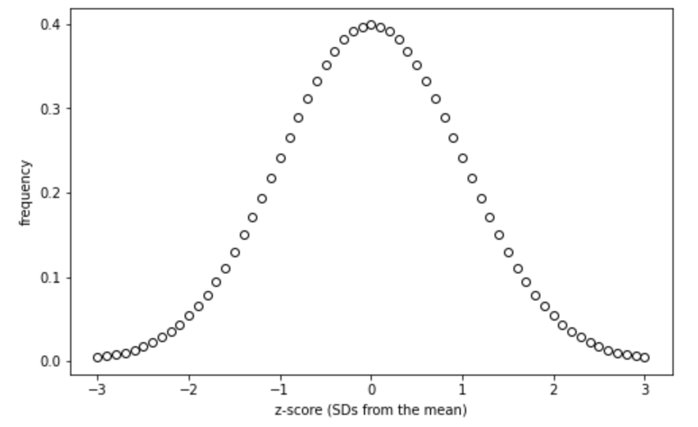
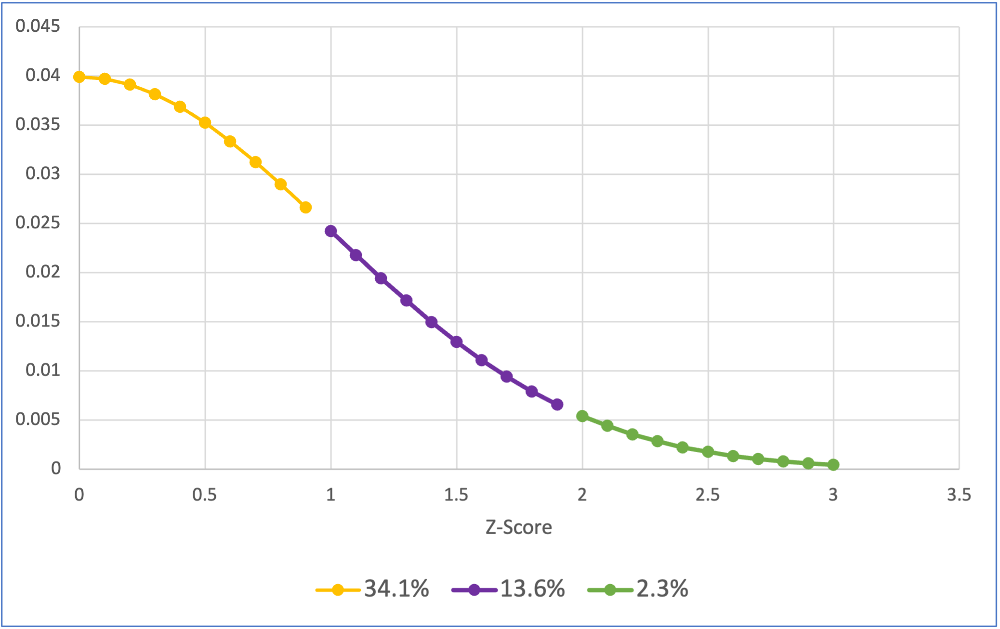

Parametric statistics often compare values to a normal distribution of expected data, based on the estimated mean and SD. Lets start by showing a (made up) normal distribution of heights in centimeters:
So lets say the average person’s height is 150cm, and the standard deviation of height across the population is 10cm. The data would look something like:
# Plot a normal distribution of heightspopulation_heights_x <-seq(120, # min180, # maxby =1)population_heights_y <-dnorm( population_heights_x,mean =150,sd =10)plot( population_heights_x, population_heights_y,xlab ="height",ylab ="frequency")# Add line to show mean and medianabline(v=150, # where the line for the mean will be lwd=5)
# Plot a normal distribution of heightsimport numpy as npfrom scipy.stats import normimport matplotlib.pyplot as pltfrom matplotlib.ticker import FormatStrFormatter# vector for the x-axispopulation_heights_x = [x for x inrange(120, 181, 1)]# vector for the y-axispopulation_heights_y = norm.pdf(population_heights_x, loc=150, scale=10)fig, ax = plt.subplots(figsize =(7, 5))ax.yaxis.set_major_formatter(FormatStrFormatter('%.2f'))# plotplt.scatter(population_heights_x, population_heights_y, color='w', edgecolors='black')# Add line to show mean and medianplt.axvline(x=150, color='black', ls='-', lw=5)# add title on the x-axisplt.xlabel("height")# add title on the y-axisplt.ylabel("Frequency")# show the plotplt.show()# show plotplt.show()

Normal Distribution
Download and open the normal.xlsx file in this repository to see data being used to create the below figure:
(note that making a vertical line to reflect the mean didn’t seem as easy in Excel as other languages, so this hasn’t been added)
You can see that the above fits a bell-curve, and the line in the middle represents both the mean and the median as the data is symmetrical. In reality, almost no data is a perfect bell-curve, but there are ways to test if the data isn’t sufficiently normal to use parametric tests with.
Next, we will look at how normal distributions allow you to transform your data to z-scores to compare to a z-distribution.
Z-scores and the z-distribution
A z-score is a standardised value that captures how many standard deviations above or below the mean an individual value is. Thus, to calculate the z-score
\[
Z = \frac{individualScore-meanScore}{StandardDeviation}
\]
Or in formal terminology:
\[
Z = \frac{x-\bar{x}}{\sigma}
\]
The calculated score can then be applied to a z-distribution, which is parametric/normally distributed. Lets have a look at a z-distribution:
# vector for the x-axisz_score_x <-seq(-3, # min3, # maxby = .1)# vector for the y-axisz_score_y <-dnorm( z_score_x,mean =0,sd =1)plot( z_score_x, z_score_y,xlab ="z-score (SDs from the mean)",ylab ="frequency")

import numpy as npfrom scipy.stats import normimport matplotlib.pyplot as pltfrom matplotlib.ticker import FormatStrFormatter# vector for the x-axisz_score_x = np.arange(-3.0, 3.1, 0.1)# vector for the y-axisz_score_y = norm.pdf(z_score_x, loc=0, scale=1)fig, ax = plt.subplots(figsize =(7, 5))ax.yaxis.set_major_formatter(FormatStrFormatter('%.1f'))# plotplt.scatter(z_score_x, z_score_y, color='w', edgecolors='black')# add title on the x-axisplt.xlabel("z-score (SDs from the mean)")# add title on the y-axisplt.ylabel("frequency")# show plotplt.show()

Z-score Distribution
Download and open the normal_z_scores.xlsx file in this repository to see data being used to create the below figure. To get the colors you need to use the “Select Data…” option when right clicking on the chart:
If you compare the height distribution above to the z-score distribution, you should see that they are identically distributed. This is useful, as we know what percentage of a population fits within each standard deviation of a normal distribution:
Download and open the normal_z_scores_0_plus.xlsx file in this repository to see data being used to create the below figure. To get the colors you need to use the “Select Data…” option when right clicking on the chart:

Normal Distribution Z-scores with percentages for each boundary
The above visualises how 34.1% of a population’s scores will be between 0 and 1 standard deviation from the mean, 13.6% of the population’s scores will be between 1 to 2 standard deviations above the mean, and 2.3% of the population will be more then 2 standard deviations above the mean. Remember that the normal distribution is symmetrical, so we also know that 34.1% of the population’s score will be between 0 to 1 standard deviations below the mean (or 0 to -1 SDs), 13.6% of the population’s score will be between -2 to -1 standard deviations from the mean, and 2.3% of the population’s score will be more negative than -2 standard deviations from the mean. Lets look at this cumulative distribution:
Download and open the normal_z_scores_percentages.xlsx file in this repository to see data being used to create the below figure. To get the colors you need to use the “Select Data…” option when right clicking on the chart:
The above figure visualises how 13.6% of the population have score that is more negative than -2 standard deviations from the mean, 34.1% of the population have a standard deviation that is more negative than -1 standard deviations from the mean (this also include all the people who are more than -2 standard deviations from the mean), etc.
We can now use the above information to identify which percentile an individual is within a distribution.
For example, let’s imagine that an individual called Jane wants to know what percentile she’s at with her height. Lets imagine she is 170cm tall, the mean height of people 150cm, and the SD 10cm. That would make her z-score:
\[
Z_{score} = \frac{170 - 150}{10} = 2
\]
As we can see from the figure above, that puts her above 97.7% of the population, putting her in the top 2.3%.
Jamie has just completed a mathematics test, where the maximum score is 100%. Their score was , the mean maths score was and the SD was . What is their Z-score?
viewof question_1_response = Inputs.number([-7,3], {label:"Z-score",step:.1});correct_z_score = (rand_maths_score - mean_maths_score)/sd_maths_score;question_1_result = { if(question_1_response == correct_z_score){return"Correct! ("+ rand_maths_score +" - "+ mean_maths_score +")/"+ sd_maths_score +" = "+ correct_z_score; } else {return"Missing or incorrect. Remember that how Z is calculated by dividing the difference between a value and the mean value by the SD." } }
Your answer is… .
Question 2
Using the above value, which percentile group would you put Jamie’s score into?
viewof question_2_response = Inputs.radio(["bottom 2.3%","bottom 15.9%","bottom 50%","top 50%","top 15.9%","top 2.3%", ], {label:"",value:"A"});question_2_result = { if(question_2_response ==""){return"awaiting your response"; } elseif(question_2_correct == question_2_response){return"Correct!"; } else {return"Missing or Incorrect - have a look at the plots above to help you find the correct answer. Note, the distributions are symmetrical, so the pattern for the top half will mirror that for the bottom half."; }}
Your answer is… .
If you want to practice with different numbers in these questions then please reload the page.